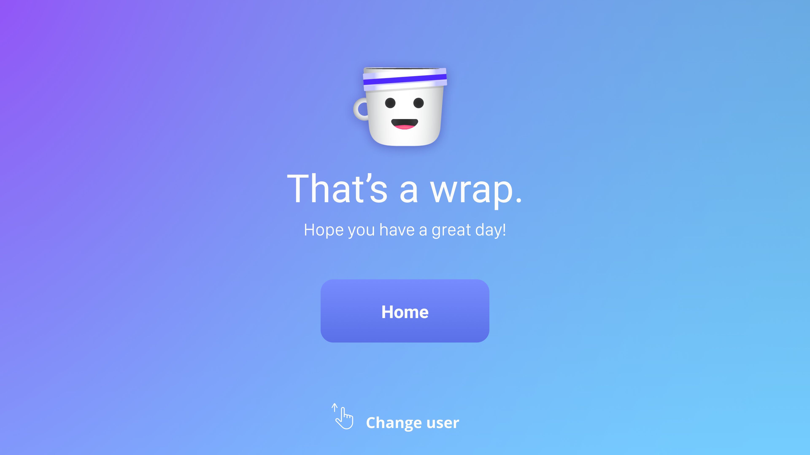

Joey
Joey is an application I worked on with Liam Madigan. It's centered around creating personalized content that's relevant to a user's morning routine - something that's easily scannable and processed in the time it takes to finish a cup of coffee.

My Approach
Because this was an interaction based on apple tv, the interactions had to be very quick and able to be navigated through with a remote which was especially challenging. We decided to make it fun and personalized with our little coffee cup character to help the user get their day started with a smile on their face.
